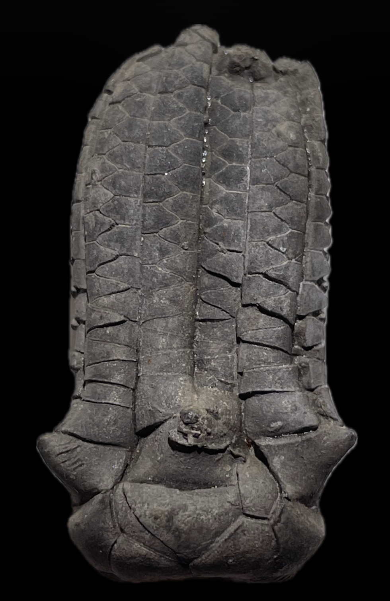
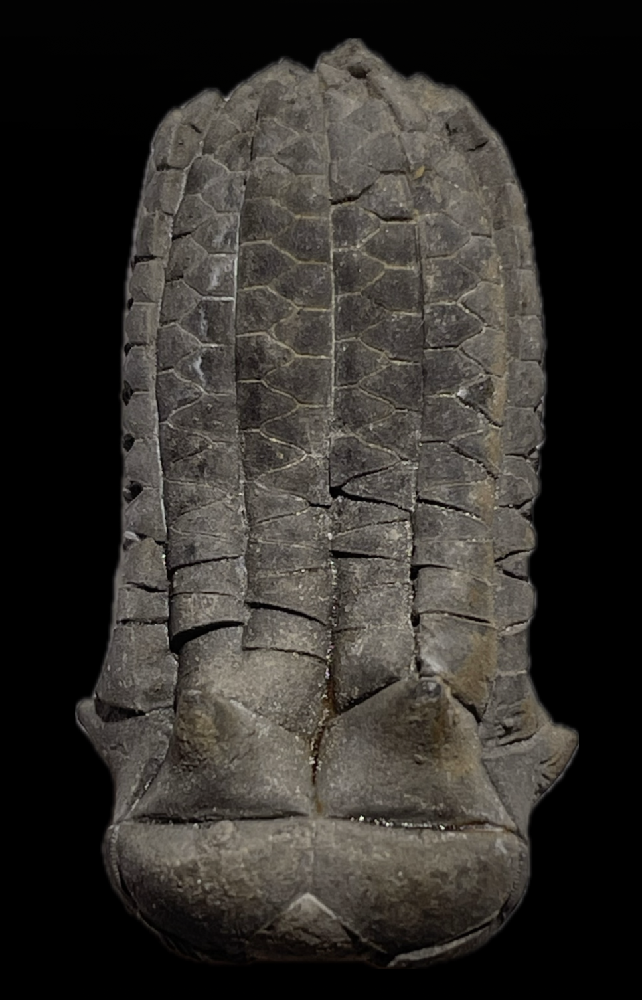

Delocrinus sp.
• Pennsylvanian
• Graford Formation
• Lake Bridgeport, Wise County, Texas, USA
Size: 3.5 cm crown
Originally identified as Delocrinus graphicus, which has been reassigned to the genus Graffhamicrinus and is characterized by "granular surface ornamentation" (Strimple 1971) consisting of "crude and random...nodes and tubercules" (Pabian & Strimple 1974). This specimen is evidently inconsistent with descriptions and figured specimens of G. graphicus, and is instead more consistent with the genus Delocrinus which has a smooth, unornamented calyx.
|

|